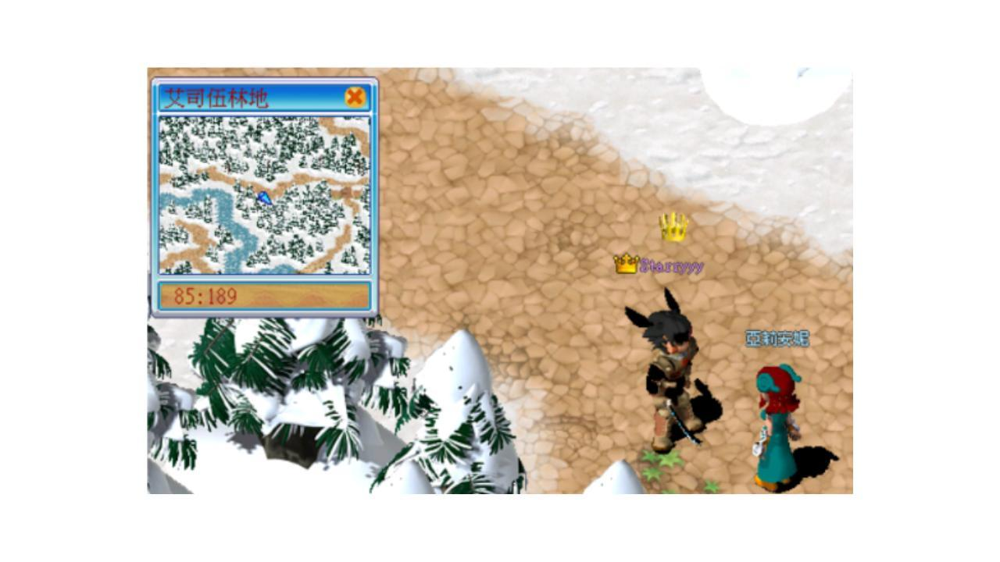
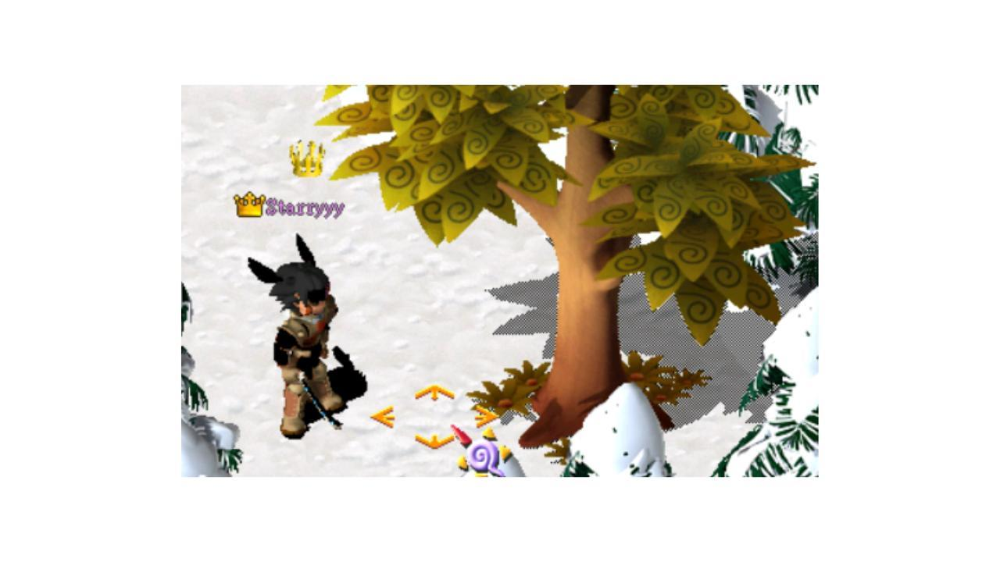
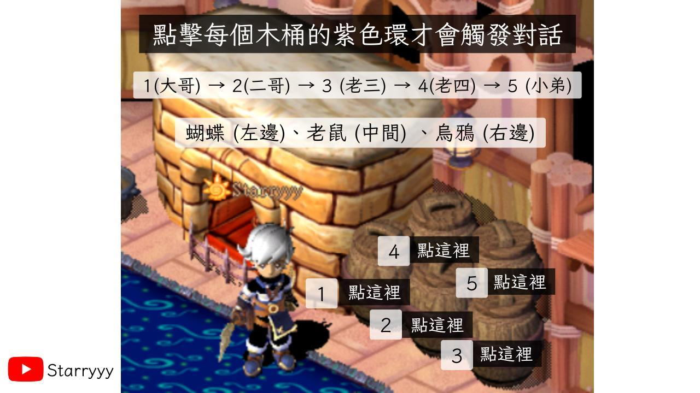
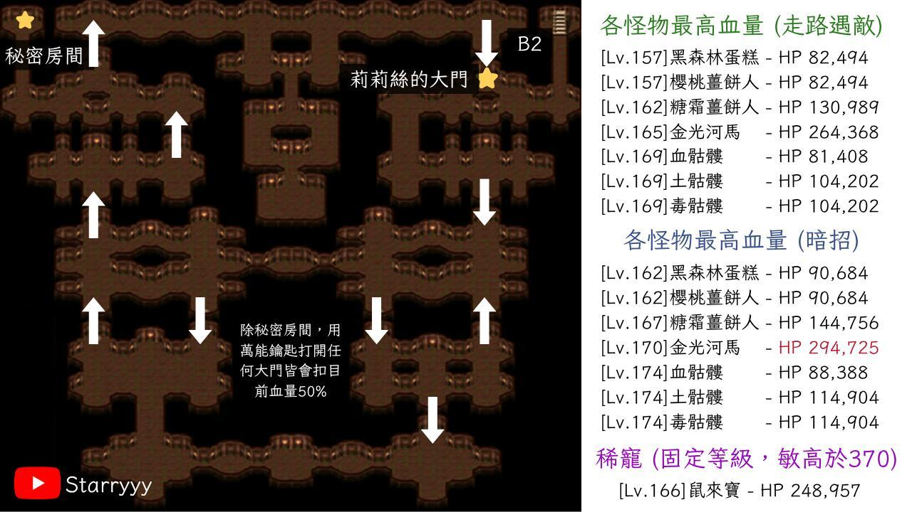

QUEST
藍鬍子
01謠言止於智者
等級 50 以上 · 名聲 10000 · 職業不限
經驗 30 萬、可因 5 萬、聲望 100
- 去伊利村 (9:27) 找石端克，他請你幫忙打聽藍鬍子的消息。
- 跟石端克身旁的包打聽說話。收集 龍骨藥酒 ×1（釀酒 130）後再跟他說話。
- 跟包打聽身旁的甄愛講說話，去吉恩村牧場 (25:92) 擠牛奶。
- 點牛 (25:92) 進入戰鬥。生氣中的乳牛，1 等，HP 55。拿到牛奶後回去找甄愛講。
- 跟甄愛講身旁的沃大嘴單挑。55 等，HP 1253。
- 回去找石端克，任務完成。
02藍鬍子的新娘
需完成謠言止於智者 · 等級、名聲、職業不限
經驗 20 萬、可因 3 萬、聲望 100、超級經驗娃娃（綁）×1
- 去伊利村 (9:27) 找石端克。他建議你去找藍鬍子新娘的姐姐打聽。
- 去羊角村莉絲貝絲的家 (51:100) 找她說話。
- 去艾司伍林地 (85:187) 找亞莉安妮。先打敗至少 100 隻艾司伍林地的幻獸，再跟她說話。

組隊沒用。幻獸數目只算自己打到的，任務材料也只有打的人會掉。
- 打敗艾司伍林地的雪豹，拿到蛇的舊皮，再跟亞莉安妮說話。
- 回羊角村找莉絲貝絲，任務完成。
03傳說中的林地深處
需完成藍鬍子的新娘 · 等級、名聲、職業不限
經驗 30 萬、可因 5 萬、白銀技能傷害娃娃 ×1
- 去羊角村莉絲貝絲的家 (51:100) 找她說話。
- 去艾司伍林地 (85:187) 找亞莉安妮，再去 (154:146) 找古怪的樹。
- 點下圖那一格，選「仔細看看」，再回去找亞莉安妮。

- 再去古怪的樹 (154:146)，對話後進入林地深處。
- 去林地深處右上方 (33:22)，找到五隻烏鴉。
- 從左到右跟大哥、二哥、老三、老四、小弟說話。每隻會隨機發出一到三種聲音：蝴蝶是左邊，老鼠是中間，烏鴉是右邊。把五個聲音轉成方向。例如烏鴉、蝴蝶、老鼠、老鼠、蝴蝶，就是右、左、中、中、左。換線、登出，或重新從外面進來，聲音都會重抽，沒有標準答案。
- 進中間的冒險者小屋。依下圖的木桶編號，從 1 到 5 點紫色環輸入方向，最後點火爐，就是地窖入口。

- 通過火爐後回去找亞莉安妮，任務完成。
04藍鬍子的秘密
需完成傳說中的林地深處 · 等級、名聲、職業不限
經驗 50 萬、可因 5 萬、聲望 200、黃金 Be Quick 娃娃 ×1
- 去艾司伍林地 (85:187) 找亞莉安妮，通過木桶的考驗後進入陰暗地窖。

- 陰暗地窖 B3 左上 (9:24) 右鍵大門，選「打開來試試」，進入藍鬍子的秘密房間。
- 先跟藍鬍子說話，再跟小女僕。她要下面四樣各 1 個，可以分批交，她會告訴你還差哪幾種。
巫婆四物飲（烹飪 200）、女巫的精華（調配 200）、苦艾酒（釀酒 140）、清晨的露珠（調配 75）。陰暗地窖 B3 掉落：黑染料、老鼠觸鬚、地窖天地精華。
- B3 (79:58) 右鍵大門，進入戰鬥打莉莉絲。等級是隊伍最高等的角色 +10，血量固定 100 萬。前排普攻約 3000，只放普攻。進戰鬥前先把血扣到一半。430 敏的急電斧跑不贏。
- 回去跟小女僕和藍鬍子說話，最後回艾司伍林地 (85:187) 找亞莉安妮，任務完成。解完仍可回地窖練功。